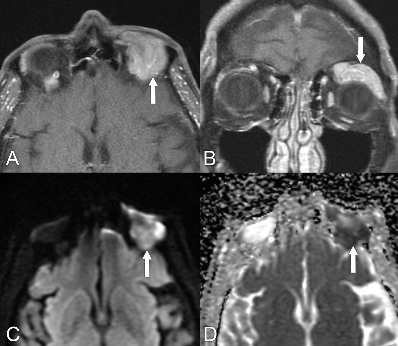
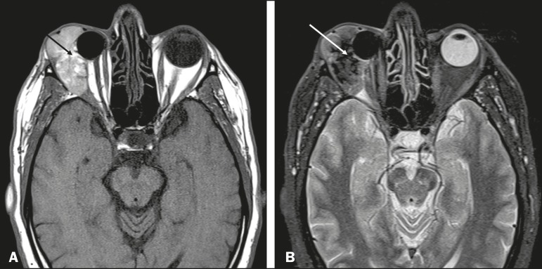
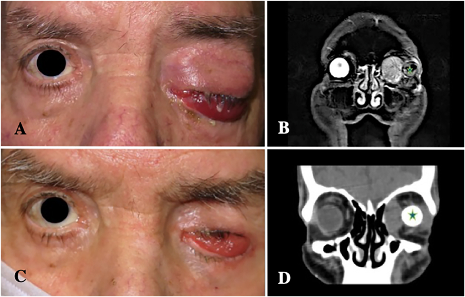
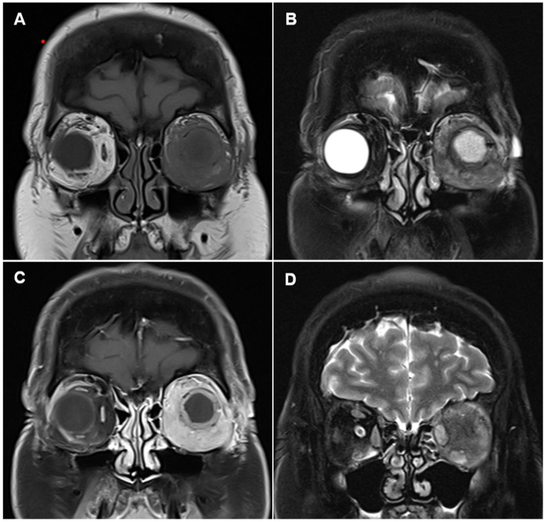

1515 — Theo dõi hốc mắt sau múc nhãn cầu vì melanoma hắc mạc: đọc MRI thế nào để không gọi sẹo là tái phát / Orbital surveillance after enucleation for uveal melanoma
Tags: pattern:khoi-hoc-mat pattern:tai-phat pattern:mo-xo pattern:day-don-hoc-mat vung:hoc-mat vung:mat vung:nhan-cau vung:dinh-hoc-mat protocol:MRI-hoc-mat protocol:MRI-T1-fat-sat protocol:DWI-ADC protocol:FDG-PET incidentaloma:khong
Mức chắc chắn (certainty): tổng hợp y văn (literature synthesis) — dựng từ hướng dẫn ESMO–EURACAN 2026 (PMC13131131), đoàn hệ 89 ca melanoma thứ phát trong hốc mắt ở Moorfields (PMC5481311), ca tái phát hốc mắt sau 9 năm (PMC12664425), 37 ca melanoma hốc mắt (PMC11978098), tổng quan MRI u hắc mạc (PMC10252038), 42 u hắc mạc đối chiếu mô học (PMC8724164), ca viêm hốc mắt quanh độn gốm sinh học (PMC9552018) và ca melanoma nguyên phát trong hốc mắt đã múc (PMC6808609). Nhóm không có bệnh nhân của mình; chỗ chưa đủ chắc ghi "chưa rõ". Không ghi tên tác giả — attribution dùng tạp chí + năm + PMCID.
Vị trí trong thư viện: 448 phủ gamut u hắc mạc + điều trị theo kích thước; 1511 phủ lan ngoài củng mạc (ESE) — yếu tố làm tái phát hốc mắt tăng từ 3% lên 18%; 1497 phủ tái phát bờ sau xạ bản; 1503 phủ di căn gan. Bài này trả lời một câu: sau khi đã múc nhãn cầu, một khối mới trong hốc mắt là sẹo – mô xơ – nhiễm độn hay tái phát, và đọc MRI thế nào để không mổ oan mà cũng không bỏ ca muộn?
Câu chốt: (1) Tái phát hốc mắt gặp ở ~3% người múc nhãn cầu vì u lớn và 18% khi có lan ngoài củng mạc lúc mổ (PMC12664425); 48% (23/48) ca bệnh hốc mắt xuất hiện ≥ 36 tháng sau điều trị u nguyên phát, 74% trong số đó > 6 năm, ca muộn nhất 40–42 năm (PMC5481311, PMC12664425). (2) Vành mô đồng tín hiệu cơ trên T1, trung gian trên T2, ngấm thuốc đều và ôm sát mặt độn là mô xơ–fibrovascular bình thường, không phải u (PMC9552018). (3) Không có tiêu chuẩn MRI nào đủ để loại trừ tái phát: ca viêm độn gốm sinh học có lan tỏa + ADC trung tính + không phù vẫn phải sinh thiết mới loại được melanoma (PMC9552018); vì vậy khối mới đẩy độn, T1 tăng/T2 giảm, ngấm không đều → lấy mô.
1. Tổng quan bệnh học – cơ chế hình ảnh
1.1 Tế bào melanoma "ngủ" ở đâu sau khi mắt đã lấy ra?
Múc nhãn cầu (enucleation) lấy nhãn cầu + một đoạn thần kinh thị, nhưng không lấy hết các đường thoát của u: ống xuyên củng mạc (emissary channels), vỏ quanh tĩnh mạch xoáy, mô mỡ sau củng mạc, và mô quanh đoạn thần kinh thị còn lại. Tế bào còn lại có thể nằm im nhiều năm rồi mới tăng sinh — gọi là hiện tượng ngủ (tumor dormancy). Cơ chế được nghĩ nhiều nhất là giám sát miễn dịch: lympho T đặc hiệu u (tyrosinase, Melan-A/MART-1, gp100) giữ cụm tế bào ở trạng thái cân bằng; khi mất nhận diện kháng nguyên hoặc suy giảm miễn dịch do tuổi/tình trạng bệnh, cụm tế bào thoát kiểm soát (PMC5481311).
Vì vậy thời gian không loại trừ: trong 48 ca melanoma thứ phát ở hốc mắt có theo dõi đầy đủ, 23 ca (48%) xuất hiện bệnh hốc mắt ≥ 36 tháng sau u nguyên phát, 17/23 (74%) sau > 6 năm, ca dài nhất > 34 năm (PMC5481311); y văn ghi nhận ca 40 năm (DOI 10.1177/11206721211001266) và 42 năm (PMC12664425). Bệnh nhân có thể đến vì đau hốc mắt, chảy dịch, kính giả không còn vừa, hoặc sờ thấy nốt — không có triệu chứng toàn thân.
1.2 Vì sao MRI là modality chính — và vì sao nó không đủ một mình
Melanin là chất thuận từ (paramagnetic): các gốc tự do bền trong melanin rút ngắn T1 → khối tăng tín hiệu T1; đồng thời rút ngắn T2 → giảm tín hiệu T2. Tỉ lệ này được báo cáo 72–95% ở melanoma hốc mắt (PMC11978098). Nhưng ~15% u hắc mạc không có sắc tố (PMC10252038) — khối không tăng T1 vẫn có thể là melanoma. Vì vậy thiếu dấu hiệu melanin không loại trừ, và có dấu hiệu melanin cũng không chứng minh tái phát (melanocytoma, máu cũ, melanoma nguyên phát đều có thể tăng T1).
Mô xơ–fibrovascular thì ngược lại: đây là mô hạt có mao mạch, nguyên bào sợi và dịch kẽ, không phải mô u đặc. Trên MRI nó đồng tín hiệu với cơ trên T1, tín hiệu trung gian trên T2 (không sáng như dịch), và ngấm thuốc mạnh, đồng nhất vì mao mạch dò rỉ + khoảng ngoại bào rộng. Dấu hiệu quyết định không phải "có ngấm thuốc" mà là hình thái: vành mỏng, đều, ôm theo mặt độn, không tạo khối đẩy (PMC9552018). Vành này xuất hiện sớm nhất khoảng 5 tháng sau đặt độn hydroxyapatite, rõ nhất ở phần ngoại vi (DOI 10.1016/s0161-6420(92)31918-9); trên 23 trẻ, ngấm thuốc được bán định lượng theo thang 5 điểm, trung bình 34 tuần sau đặt độn (DOI 10.5301/EJO.2011.6298).
1.3 Khuếch tán (DWI/ADC): hữu ích nhưng chồng lấn
Chuyển động khuếch tán của nước giảm khi mật độ tế bào tăng → ADC thấp. Melanoma hắc mạc có ADC 1,16 ± 0,26 × 10⁻³ mm²/s (PMC8724164); lymphoma hốc mắt 0,6–0,8 × 10⁻³ mm²/s, viêm 1,0–1,3 × 10⁻³ mm²/s, với ngưỡng gợi ý < 0,75–0,80** cho lymphoma và **> 0,9–1,0 cho viêm (PMC13171307). Ba dải này chồng nhau, và không có nghiên cứu nào lập ngưỡng riêng cho hốc mắt đã múc nhãn cầu. Ca viêm độn gốm sinh học có ADC trung tính, không phù trên T2, và vẫn không phân biệt được với tái phát trước sinh thiết (PMC9552018) — đây là bài học cốt lõi: ADC là bằng chứng phụ, không phải phán quyết.
1.4 Các con số phải nhớ
- Tần suất: ~3% sau múc nhãn cầu vì u lớn; 18% nếu có lan ngoài củng mạc lúc mổ (PMC12664425). Lan ngoài củng mạc có mặt ở 2–6% tất cả u hắc mạc và ~13% mắt phải múc (PMC13583686).
- Thời điểm: trong melanoma thứ phát ở hốc mắt, 48% xuất hiện muộn ≥ 36 tháng; 74% ca muộn xảy ra > 6 năm (PMC5481311).
- Tiên lượng: sau khi có bệnh hốc mắt, 52/69 ca tử vong, với trung vị 24 tháng từ lúc chẩn đoán hốc mắt (PMC5481311); sống 5 năm của 37 ca melanoma hốc mắt (hỗn hợp nguyên phát/thứ phát) là 78,4% ± 7,3% (PMC11978098). Tái phát tại chỗ làm tăng nguy cơ di căn, với HR 6,28 được dẫn trong tổng quan ca tái phát (PMC12664425).
- Biến chứng không phải u: lộ độn xảy ra 0,9–11% (PMC12020655) — một "kẻ bắt chước" thường gặp của tái phát.
2. Mẫu hình + chẩn đoán phân biệt theo vị trí (gamut)
Mẫu hình trung tâm: mô mềm mới hoặc dày lên trong hốc mắt đã mất nhãn cầu, có/không đẩy độn hốc mắt, có/không tăng tín hiệu T1.
Bốn câu hỏi phải trả lời trước khi gọi "tái phát":
- Mô mới nằm ở đâu? tiền vách/socket (nang, u hạt, lộ độn) · trong nón (cuống thị, đỉnh) · ngoài nón (mỡ, cơ, tuyến lệ) · trong chính độn (fibrovascular bình thường vs nhiễm).
- Nó có tôn trọng mặt độn không? vành đều, ôm sát = mô xơ; nốt tách rời/đẩy độn = khối thật.
- Tín hiệu có "melanin" không? T1 tăng + T2 giảm; nhớ 15% u không sắc tố.
- Có bằng chứng lan ra ngoài hốc mắt? xương, đỉnh, thần kinh thị, não — đổi giai đoạn và kế hoạch mổ.
Gamut theo khoang:
- Tiền vách/socket: nang kết mạc khổng lồ · u hạt dị vật · lộ/nhiễm độn · tái phát tại mỏm củng mạc · u nhú.
- Trong nón: tái phát dọc cuống thần kinh thị · u màng não thần kinh thị · di căn · lymphoma.
- Ngoài nón: tái phát theo ống xuyên củng mạc · u tuyến lệ · myositis/viêm cơ · di căn.
- Trong độn: fibrovascular ingrowth bình thường (vành ngấm đều) · nhiễm độn (ổ dịch/khí, lộ niêm mạc) · độn gốm sinh học gây viêm lan tỏa.
Mnemonic "SOCKET": Signal (T1/T2 có melanin?) · Orbit compartment (trong/ngoài nón) · Conformity to implant (ôm mặt độn?) · Kinetics/ADC (ngấm đều hay không, ADC) · Extraorbital spread (xương/đỉnh/não) · Tissue (sinh thiết khi còn nghi).
3. Bảng so sánh phân biệt (ma trận đối chiếu)
| Thực thể (entity) | Hình ảnh điển hình (MRI/CT) | Chốt vào (rule-in) | Chốt loại (rule-out) | Gợi ý xác nhận |
|---|---|---|---|---|
| Tái phát melanoma hốc mắt | Khối đặc bờ rõ/vừa, T1 tăng nếu sắc tố, T2 giảm, ngấm mạnh không đều, đẩy độn, có thể xâm lấn cơ/đỉnh; ADC thấp | Khối mới so với MRI nền + đẩy độn + T1↑/T2↓ + ngấm không đều | Vành mỏng đều ôm sát độn, không đẩy → không phải khối | Sinh thiết/FNA có kiểm soát + mô học; PET-CT/staging gan |
| Mô xơ–fibrovascular quanh độn | Vành mô đồng tín hiệu cơ T1, trung gian T2, ngấm đều, bám mặt độn; ngấm rõ ở ngoại vi trong vài tháng đầu | Đều, đối xứng, không đẩy độn, không xâm lấn mỡ | Nốt rời, bờ không đều, ngấm không đồng nhất → nghi u | So sánh chuỗi trước; chụp lại 3–6 tháng |
| Viêm hốc mắt do độn (gốm sinh học/HA) | Lan tỏa, T1 đồng tín hiệu cơ, T2 trung gian, ngấm mạnh, phù cơ, không có nốt; đau, hồng, chảy dịch | Lan tỏa + phù cơ + bối cảnh độn + giảm sau tháo độn | Khối khu trú, bờ rõ, xâm lấn xương → không phải viêm đơn thuần | Sinh thiết + cấy; tháo độn nếu tái phát |
| Nhiễm/lộ độn | Khuyết niêm mạc, dịch/khí quanh độn, viêm mô; CT thấy rõ hơn MRI | Lộ độn + dịch/khí + chảy mủ | Niêm mạc liên tục, không dịch → không nhiễm | Lâm sàng + cấy; siêu âm/CT |
| Nang kết mạc khổng lồ | Cấu trúc dịch thuần: T1 thấp/đồng tín hiệu dây thị teo, không ngấm thuốc, vỏ mỏng; CT nội dung giảm tỷ trọng | Tín hiệu dịch, không phần đặc ngấm thuốc | Có thành phần đặc/ngấm → không phải nang đơn thuần | Siêu âm/CT; chọc hút |
| Melanoma NGUYÊN PHÁT hốc mắt | Khối sắc tố T1↑/T2↓, không có u nội nhãn; tiền sử múc mắt vì lý do khác | Tiền sử múc mắt không do u + T1↑/T2↓ + không có u nguyên phát nội nhãn | Có tiền sử melanoma hắc mạc → nghĩ tái phát trước | Sinh thiết + staging toàn thân |
| Di căn hốc mắt | Khối xâm lấn, T1 đồng/tăng nhẹ, T2 tăng, ngấm thuốc; bối cảnh ung thư khác | Bệnh nguyên phát đã biết + nhiều ổ + xâm lấn xương | Đơn độc, sắc tố, không có bệnh nguyên phát | Sinh thiết + PET-CT |
| Lymphoma hốc mắt | Ôm khuôn theo cấu trúc, T2 tối, ngấm đồng nhất, ADC 0,6–0,8 × 10⁻³ mm²/s | ADC thấp + ôm khuôn + không phá xương | ADC > 1,0 hoặc phù lan tỏa → nghi viêm | Sinh thiết; DWI/ADC |
| Xơ hóa sau xạ/mổ | Mô xơ co kéo, T2 thấp, ngấm chậm; không đẩy độn; ổn định qua các lần chụp | Bối cảnh xạ + kích thước ổn định + co kéo | Lớn dần, đẩy độn, ADC thấp → không phải sẹo | So sánh nhiều thời điểm; sinh thiết nếu tiến triển |

Ví dụ đọc "tín hiệu + khuếch tán" ở một khối hốc mắt: T1 sau tiêm (A), T1 sau tiêm mặt cắt trán (B), DWI (C) và ADC (D). Khối ngấm thuốc mạnh, hạn chế khuếch tán (sáng trên DWI, tối trên ADC) — kiểu mô đặc, mật độ tế bào cao. Lymphoma có ADC 0,6–0,8 × 10⁻³ mm²/s, thấp hơn viêm (1,0–1,3); melanoma hắc mạc 1,16 ± 0,26 — ba dải chồng nhau nên ADC không tự quyết định. Nguồn: Frontiers in Ophthalmology 2026, Fig. 4, PMC13171307, CC BY 4.0.Ba bước đọc một "khối mới" trong hốc mắt đã múc
- So với MRI nền, không so với trí nhớ. Mô xơ sau mổ ngấm thuốc mạnh trong những tháng đầu; chỉ thay đổi theo thời gian mới có ý nghĩa. Nếu chưa có nền → chụp lại 3–6 tháng trước khi kết luận.
- Mô tả hình thái trước, tín hiệu sau. "Vành đều ôm độn" ≠ "khối đẩy độn". Đây là khác biệt giữa theo dõi và lấy mô.
- Trả lời câu hỏi lâm sàng, không chỉ câu hỏi hình ảnh. Đau + kính không vừa + nốt sờ thấy ở người có ESE (nguy cơ tái phát 18%) đủ để sinh thiết dù ADC "trung tính" (PMC9552018).
4. Protocol chụp + hệ phân độ/điểm chuẩn hóa
4.1 Protocol MRI hốc mắt sau múc nhãn cầu
- Máy: ưu tiên 3 T + cuộn bề mặt (surface coil); 1,5 T vẫn dùng được nhưng cần lát mỏng hơn (PMC10252038).
- Mặt phẳng: axial, coronal, sagittal; lát ≤ 2–3 mm, FOV từ bờ trước hốc mắt tới đỉnh (gồm giao thoa thị giác khi nghi lan).
- Chuỗi xung tối thiểu: T1 · T2 fat-sat · T1 fat-sat sau gadolinium (3 mặt phẳng) · DWI (b = 0 và 1.000) + ADC. Có thể thêm 3D T1 fat-sat isotropic ~1 mm để dựng lại theo trục thần kinh thị.
- Đo: đường kính lớn nhất 3 mặt phẳng; khoảng cách tới mặt độn, đỉnh hốc mắt, thần kinh thị; ROI ADC ≥ 3 vùng, tránh hoại tử/vôi.
- Đối chiếu: cùng mặt phẳng, cùng chuỗi với lần trước; ghi rõ thời điểm so với mổ.
- CT: khi cần xương (xâm lấn/thủng thành hốc mắt) hoặc khi MRI không thực hiện được; không dùng CT để đo mô mềm.
4.2 Khi nào chụp? (không có lịch chuẩn — nói rõ mức chắc chắn)
- Khuyến cáo có bằng chứng: ESMO 2026 khám lâm sàng mỗi 6 tháng trong 2–5 năm đầu, sau đó hằng năm; guideline không đưa ra lịch MRI hốc mắt thường quy (PMC13131131). Khi nghi tái phát ngoài nhãn cầu, chỉ định MRI hốc mắt + não và staging toàn thân (PMC13131131).
- Thực hành hợp lý (suy luận từ dữ liệu, không phải mức I): bệnh nhân nguy cơ cao (ESE > 5 mm, bờ dương, u thể biểu mô) — MRI nền 3–6 tháng sau mổ để có mốc so sánh, sau đó chụp khi có triệu chứng hoặc mỗi 6–12 tháng trong 2–3 năm đầu. Lý do: bệnh hốc mắt muộn gặp ở 48% và có thể là biểu hiện duy nhất của bệnh tái hoạt (PMC5481311, PMC12664425).
- Không chụp định kỳ vô hạn: lợi ích sống còn chưa được chứng minh; chi phí và lo âu là thật (PMC13131131).
4.3 Bảng mốc thời gian thực hành
| Thời điểm | Việc làm | Vì sao |
|---|---|---|
| 3–6 tháng sau mổ | MRI nền (nếu nguy cơ cao hoặc cần mốc) | Mô xơ còn ngấm mạnh; cần ảnh nền để so |
| Mỗi 6 tháng (2–5 năm) | Khám hốc mắt, kính giả, sờ nốt, đau/dịch | ESMO 2026 (PMC13131131) |
| Bất kỳ lúc nào có triệu chứng | MRI hốc mắt ± não; CT nếu cần xương | Đau, kính không vừa, nốt, chảy máu |
| Sau 5 năm | Khám hằng năm; giáo dục bệnh nhân về tái phát muộn | 74% ca muộn > 6 năm (PMC5481311) |
4.4 Đường đi quyết định
flowchart TD
A[Khoi moi trong hoc mat da muc nhan cau] --> B[MRI: T1, T2 FS, T1 FS sau gad, DWI/ADC]
B --> C{Hinh thai va tin hieu?}
C -->|Vanh deu, om sat don, khong day| D[Mo xo/fibrovascular: so sanh nen, chup lai 3-6 thang]
C -->|Khoi day don, T1 tang/T2 giam, ngam khong deu| E[Nghi tai phat: sinh thiet co kiem soat]
C -->|Lan toa, phu co, ngam manh, khong khoi| F[Nghi viem/nhiem: cay, thu noi khoa, thao don neu that bai]
E --> G{Mo hoc melanoma?}
G -->|Co| H[Staging gan + PET-CT; hoi chan mo/xa/he thong]
G -->|Không| D
D --> I[Chụp lại nếu còn nghi]
F --> I
4.5 Hệ phân độ/điểm
Không có RADS hay thang điểm riêng cho hốc mắt sau múc nhãn cầu. Các thang hiện có chỉ dùng để bán định lượng mức ngấm thuốc của độn (thang 5 điểm cho fibrovascular ingrowth — DOI 10.5301/EJO.2011.6298) hoặc phân giai đoạn u nguyên phát AJCC 8 — không dùng để chẩn đoán tái phát. Vì vậy quyết định dựa trên hình thái + so sánh + mô học, không dựa trên "điểm".
5. Biến thể bình thường và cạm bẫy
- Vành ngấm thuốc quanh độn là bình thường. Trong ca viêm độn gốm sinh học, vành mô ngoại vi của độn được mô học xác nhận là fibrovascular ingrowth, không phải u (PMC9552018). Đừng gọi "tái phát" chỉ vì vành ngấm mạnh.
- "Cold zone" trước độn = thiếu mạch nuôi, không phải u. Trên 2 ca lộ độn hydroxyapatite, vùng không ngấm thuốc phía trước tương ứng thất bại xâm nhập mạch tại chỗ lộ (DOI 10.1016/s0161-6420(94)31112-2). Ngược lại, vành ngấm đều mới là lành.
- ADC "trung tính" không loại trừ tái phát. Ca 2022: lan tỏa, không phù trên T2, ADC trung tính, phù cơ — vẫn phải sinh thiết; kết quả là viêm, hết sau tháo độn (PMC9552018).
- U không sắc tố. ~15% u hắc mạc không tăng T1 (PMC10252038) — đừng đợi "T1 sáng" mới nghĩ melanoma.
- Melanoma NGUYÊN PHÁT trong hốc mắt. Bệnh nhân múc mắt vì đau/thần kinh/trauma rồi 12 năm sau có khối sắc tố: MRI T1 tăng, T2 giảm mạnh, CT xâm lấn cơ/tuyến lệ — chẩn đoán là melanoma nguyên phát hốc mắt, không phải "tái phát" (PMC6808609). Tiền sử múc mắt vì lý do gì là câu hỏi bắt buộc.
- Nang kết mạc khổng lồ sau múc mắt: cấu trúc dịch, T1 đồng tín hiệu dây thị teo, không ngấm thuốc; gặp ở 3–7% người múc mắt có đặt độn — dễ bị đọc là "khối" nếu chỉ nhìn T1 (PMC10959544).
- Độn cũ có vỏ kim loại gây giả ảnh dải trên CT; đối chiếu phim cũ và mô tả loại độn (PMC9650925).
- Bỏ sót do "thỏa mãn tìm kiếm": thấy độn lệch là dừng. Phải nhìn sau độn, đỉnh hốc mắt, cuống thần kinh thị, và hốc mắt bên kia.
- Sinh thiết không làm thay đổi xử trí thì đừng làm. Ngược lại, khi kết quả đổi giữa theo dõi và nạo vét/mổ, phải lấy mô — không có dấu hiệu MRI nào thay thế được mô học (PMC9552018).

Melanoma nguyên phát trong hốc mắt đã múc: T1 (A) có ổ tăng tín hiệu (mũi tên đen) trong khối lan tỏa; STIR (B) khối giảm tín hiệu (mũi tên trắng), không mất tín hiệu khi fat-sat — phù hợp melanin, không phải mỡ. Đây là "kẻ bắt chước" của tái phát khi tiền sử múc mắt không do u. Nguồn: Radiologia Brasileira 2019, Fig. 2, PMC6808609, CC BY-NC-ND 4.0 (nguyên bản, không cắt ghép).6. Tự lượng giá — Blind Quiz
Ca 1 — Đau hốc mắt và kính giả không còn vừa, 9 năm sau múc nhãn cầu vì melanoma hắc mạc.

- Gợi ý lâm sàng: nam 80 tuổi, đau nhiều hốc mắt phải, không sốt, không sụt cân; tiền sử múc nhãn cầu 9 năm trước vì melanoma hắc mạc thể biểu mô, không lan củng mạc/thần kinh thị.
- Câu hỏi: (1) Mô tả bất thường trên MRI và vị trí độn. (2) Ba chẩn đoán phân biệt hàng đầu. (3) Bước tiếp theo đổi xử trí là gì?
Bấm để hiện đáp án (findings + chẩn đoán)
- Findings: MRI mặt cắt trán T2 thấy khối lớn lấp gần toàn bộ hốc mắt, đồng tín hiệu với cơ, đẩy độn ra ngoài (dấu sao); CT không phá xương. FDG-PET/CT trong ca gốc tăng bắt xạ tại hốc mắt, không có ổ khác.
- Chẩn đoán: tái phát melanoma hắc mạc trong hốc mắt — xác nhận bằng FNA qua mí dưới; sau đó pembrolizumab làm giảm > 50% thể tích trong 3 tháng, độn trở về vị trí cũ.
- Vì sao không phải "sẹo": khối đẩy độn, không ôm mặt độn, và có triệu chứng mới — khác vành fibrovascular đều.
- Bài học: tái phát có thể xuất hiện 9 năm sau mổ và không có di căn lúc trình diện; không được trấn an bằng "đã múc mắt là khỏi".
- Nguồn: American Journal of Ophthalmology Case Reports 2025, Fig. 1, PMC12664425, CC BY-NC-ND 4.0.
Ca 2 — Sáu tháng sau múc nhãn cầu vì u T4b, đau tăng và kính giả lệch xuống 1 cm.

- Gợi ý lâm sàng: nữ 60 tuổi, múc nhãn cầu trái 6 tháng trước vì melanoma hắc mạc T4b, đặt độn gốm sinh học 22 mm; đau hốc mắt 2 tháng, kính giả lệch, hai nốt di động ở bờ dưới hốc mắt, niêm mạc đỏ nhưng không lộ độn.
- Câu hỏi: (1) Phần nào của hình ảnh là bình thường? (2) Vì sao ADC không giúp loại trừ? (3) Xử trí?
Bấm để hiện đáp án (findings + chẩn đoán)
- Bình thường: vành mô ngoại vi trong độn — đồng tín hiệu cơ trên T1, trung gian trên T2, ngấm thuốc đều — là fibrovascular ingrowth, được mô học xác nhận.
- Bất thường: thâm nhiễm lan tỏa ra mô mỡ quanh độn, ngấm mạnh, phù cơ trực; không có phù rõ trên T2/ADC nên không phân biệt được viêm xơ hóa với tái phát lan tỏa.
- Xử trí: sinh thiết (frozen section) — không có tế bào ác tính; tháo độn; triệu chứng hết hoàn toàn. Chẩn đoán: viêm hốc mắt do độn gốm sinh học.
- Bài học: vành ngấm đều = lành, nhưng lan tỏa + phù cơ vẫn cần mô học; ADC trung tính không loại trừ.
- Nguồn: American Journal of Ophthalmology Case Reports 2022, Fig. 2, PMC9552018, CC BY-NC-ND 4.0.
Ca 3 — Khối sắc tố làm bật kính giả, 12 năm sau múc nhãn cầu vì đau thần kinh hốc mắt.
- Gợi ý lâm sàng: nam 59 tuổi, múc nhãn cầu phải 12 năm trước vì biến chứng tiêm cồn điều trị đau thần kinh hốc mắt (không phải ung thư); nay khối to 3 tháng, đẩy bật kính giả.
- Câu hỏi: (1) Tín hiệu nói gì? (2) Vì sao không gọi là "tái phát melanoma"? (3) Cần gì để chẩn đoán?
Bấm để hiện đáp án (findings + chẩn đoán)
- Tín hiệu: ổ tăng T1 và giảm mạnh T2/STIR trong khối lan tỏa = melanin; khối xâm lấn cơ trực/cơ chéo, tuyến lệ, không có mặt phẳng tách.
- Vì sao không phải tái phát: mắt được múc vì lý do không do u — không có melanoma nội nhãn để "tái phát". Đây là melanoma nguyên phát hốc mắt (nguồn gốc tế bào melanin neural crest còn lại trong hốc mắt), chiếm < 1% u hốc mắt nguyên phát (PMC6808609, PMC11978098).
- Chẩn đoán: sinh thiết → melanoma thể tế bào hình thoi, sắc tố mạnh; staging âm tính.
- Bài học: hỏi lại lý do múc mắt là bước 0; "khối sắc tố trong hốc mắt" không đồng nghĩa "tái phát".
- Nguồn: Radiologia Brasileira 2019, Fig. 2, PMC6808609, CC BY-NC-ND 4.0.
7. Câu hỏi nghiên cứu & điểm chưa đồng thuận (tính đến 11/2026)
[Khác biệt thực hành] Ở người múc nhãn cầu vì u hắc mạc nguy cơ cao (ESE > 5 mm/bờ dương), MRI hốc mắt định kỳ có cải thiện phát hiện sớm và sống còn so với chỉ khám lâm sàng?
- Đã biết: tái phát 3% (u lớn) và 18% (có ESE); 48% xảy ra ≥ 36 tháng; ESMO 2026 chỉ khuyến cáo khám 6 tháng/lần trong 2–5 năm rồi hằng năm, không đưa ra lịch MRI thường quy.
- Chưa rõ: lợi ích sống còn của MRI định kỳ, nhịp tối ưu và chi phí–lợi ích ở nhóm nguy cơ cao.
- Hướng nghiên cứu: đoàn hệ tiến cứu/registry phân tầng theo ESE, so sánh MRI định kỳ với khám lâm sàng.
- Nguồn: PMC13131131; PMC12664425; PMC5481311.
[Tranh cãi] Ngưỡng ADC nào phân biệt tái phát melanoma với mô xơ/viêm trong hốc mắt đã múc nhãn cầu?
- Đã biết: melanoma hắc mạc ADC 1,16 ± 0,26 × 10⁻³ mm²/s; lymphoma 0,6–0,8; viêm 1,0–1,3; ca viêm độn có ADC trung tính vẫn không loại trừ được u.
- Chưa rõ: ngưỡng riêng cho hốc mắt sau múc/xạ, ảnh hưởng của độn và xơ hóa lên ADC.
- Hướng nghiên cứu: nghiên cứu độ chính xác chẩn đoán, đối chiếu mô học, báo cáo STARD.
- Nguồn: PMC8724164; PMC13171307; PMC9552018.
[Khoảng trống] FDG-PET/CT có giá trị gì khi MRI hốc mắt không kết luận?
- Đã biết: ESMO ghi giá trị còn tranh luận; ca tái phát có bắt xạ cao tại hốc mắt và không có ổ ngoài hốc mắt.
- Chưa rõ: ngưỡng SUV, độ đặc hiệu trong viêm/hoại tử sau xạ, và ảnh hưởng lên quyết định mổ.
- Hướng nghiên cứu: đoàn hệ tiến cứu so PET/CT với mô học ở ca MRI không kết luận.
- Nguồn: PMC13131131; PMC12664425.
Bài liên quan chéo
- 448 – U hắc mạc: melanoma vs névus vs di căn — gamut + MRI + điều trị theo kích thước
- 1511 – Lan ngoài củng mạc của melanoma hắc mạc: 5 mm chia đôi tiên lượng
- 1497 – Tái phát bờ sau xạ bản mạch melanoma hắc mạc
- 1503 – Di căn gan của melanoma hắc mạc
- 1510 – Hội chứng khoang hốc mắt cấp: chẩn đoán phân biệt khối/lồi mắt cấp
- 1506 – Dị vật hốc mắt tồn lưu: giả ảnh kim loại và cạm bẫy CT
- 400 – Tổng quan Mắt & thị giác
Ảnh
images/1515_theo-doi-hoc-mat_MRI-T2-CT_PMC12664425.jpg— Fig. 1, American Journal of Ophthalmology Case Reports 2025, PMC12664425, CC BY-NC-ND 4.0.images/1515_theo-doi-hoc-mat_MRI-T1T2CE_PMC9552018.jpg— Fig. 2, American Journal of Ophthalmology Case Reports 2022, PMC9552018, CC BY-NC-ND 4.0.images/1515_theo-doi-hoc-mat_MRI-DWIADC_PMC13171307.jpg— Fig. 4, Frontiers in Ophthalmology 2026, PMC13171307, CC BY 4.0.images/1515_theo-doi-hoc-mat_MRI-T1STIR_PMC6808609.jpg— Fig. 2, Radiologia Brasileira 2019, PMC6808609, CC BY-NC-ND 4.0.
Không dùng để chẩn đoán độc lập khi chưa có người hướng dẫn.